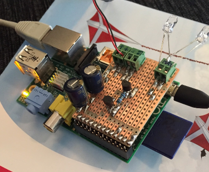

Hello all here.
I have just entered this world of homeautomatation 
I have just soldered up, an IR-blaster, for my RaspberryPi, which also have installed the openremote-controller (On newest rasbian image)
I must say, that everything was fairly easy to get working, and soo i have success with my IR-blaster (DIY).
I created some small shell scripts, which executes the lirc irsend, created some buttons, and make that work.
Now i wonder, if it's possible to make a slider for volume? -The IR-blaster, is ofcause a one way system, giving no feedback at all!
What i would like, is to set some points at the slider e.g volume 25%, volume 50% and soo on, making it feel like the slider works.
I can make shell scripts, which calculates where the volume is at moment (just for example add 1 for every button press etc...) so, maybe this value can be used for slider.
Thank you all in advance!
Rgds; Jesper.
Examble of script for volume up ::
****************************************
pi@HomeBox ~/lirc $ cat tv-vol-up.sh
#!/bin/sh
irsend SEND_ONCE philips +
sleep 0.5
exit
****************************************

{kind=link}